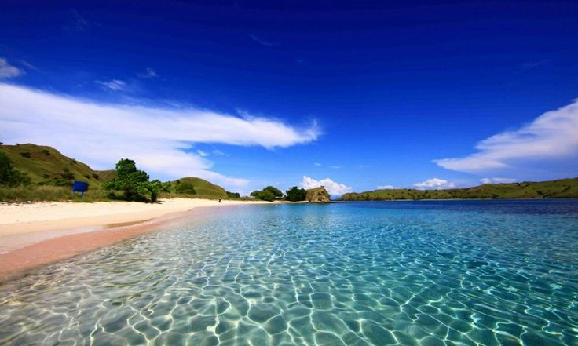
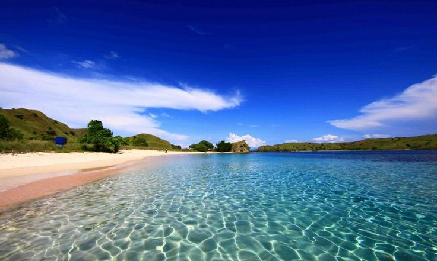

|

Tempat Wisata di Lombok menjadi perbincangan yang banyak dijadikan tujuan dalam berwisata, tak hanya di kalangan anak muda, bahkan di kalangan orang tua yang mencintai dunia wisata banyak yang memilih Pulau Lombok. Pulau Lombok merupakan pulau yang terkenal dengan alamnya yang indah dan menawan, bahkan tidak jarang orang-orang yang mulai menjadikan Pulau Lombok sebagai destinasi wisata, entah itu di kalangan mahasiswa untuk liburan atau bahkan di kalangan keluarga untuk mendapatkan suasana baru.
|


 
